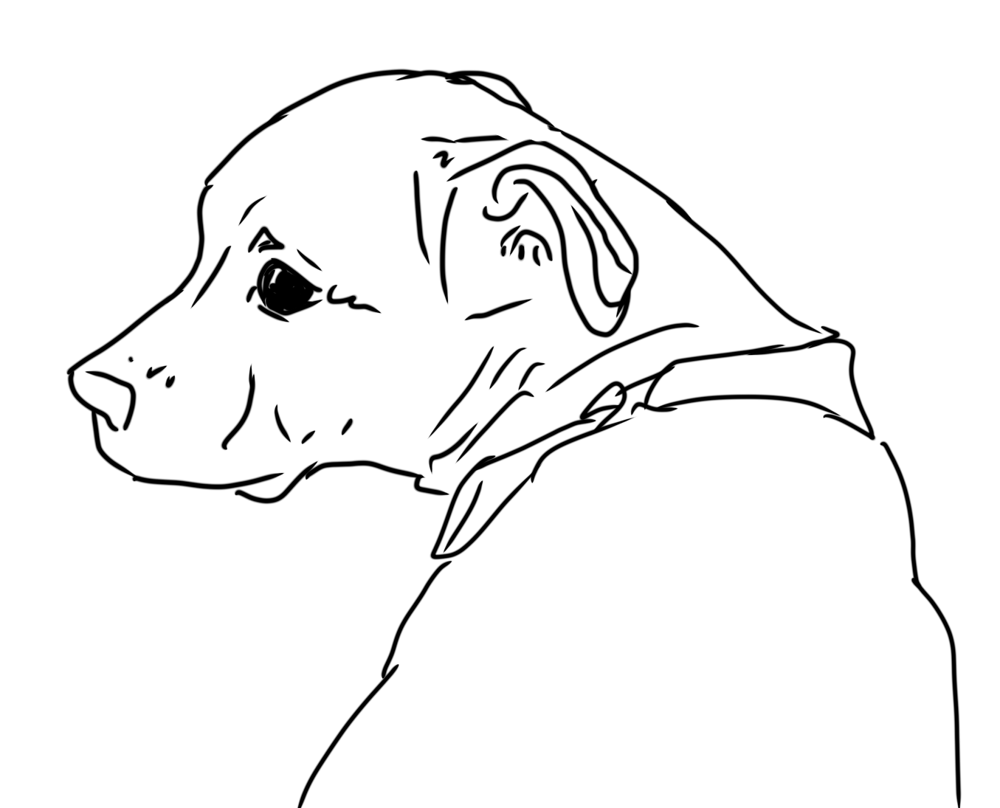
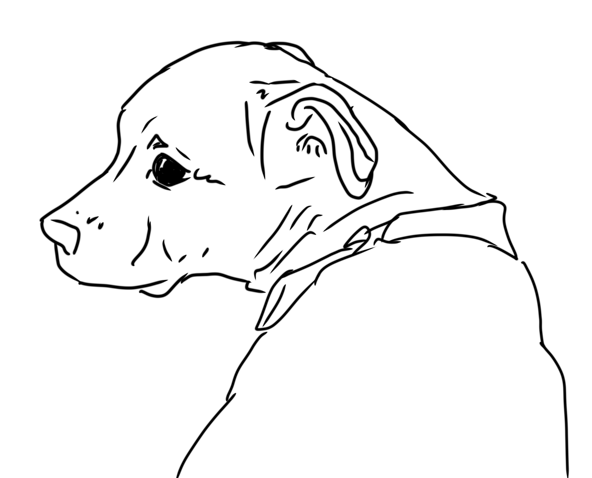

Canyons Digital Art

Introduction


My history with digital art:
I have been involved with the digital art medium for around 6 years. However, only in the last 2 have I begun taking it seriously, and buying professional materials to produce my art. I started doing digital art in highschool, on my phone. I used an app called Ibis Pro X, which was free, easy to learn, and not by any means a fancy app for pros. I loved using Ibis to trace photos of my traditional work, so I could turn them into digital pieces. After doing a lot of tracing, I occasionally tried to get out of my comfort zone and draw straight from the app. Because my phone was so small, I had to use my pinkie finger to draw on this app. It was extremely challenging to create art like this, but in the pursuit of learning how to use this medium, I did it anyway.
Where am I now?
After years of struggling to make work look professionally drawn from my phone, I finally broke down and bought a professional Wacom One tablet. This has been a game changer. After downloading Krita, a free art program for beginner tablet users, I really got into a groove with this medium. I finally felt like I was making my digital artwork on par to my traditional pieces. Then eventually I bought Clip Studio paint, and now I create all my work from there. It was a long and painful process, but I am so happy to finally have a smooth and functioning relationship with digital art.
Materials

.png)
Current and Past Materials
To create digital art, I use the Wacom One tablet, which is connected to my laptop. Here is the tablet on the Wacom store if youre interested! I also use ClipStudio paint Pro, which is my current favorite digital art program. It's simple, customizable, and really not that hard to learn. It also favors raster art over vector, which is my favorite. Vector art, like in adobe illustrator, does NOT favor my art style. And that program is also extremely hard to use and learn. I watched a few videos to really learn ClipStudio paint, and have found a lot of inspiration from these specific youtube creators. If you are interested in this program, please check them out!
Hanacue
GinjaninjaOwO
Kuroshiro
Process
For my process, I start by creating a blank layer in ClipStudio. I use the pencil tool (usually in any other color but black) and begin to sketch out what I want.


After I am pleased with the sketch, I go ahead and try and tidy it up as much as possible. I erase any unessisary lines, and fix up any areas that are loose. Then, I create another layer and place it ontop of my sketch layer. On this layer, I use the rrounded marker brush and trace over the line work of my peice.

After I am happy with the linework, I hide the sketch layer underneath to reveal the line work alone. This is where I start thinking about color. Scowering the internet for color pallets is what I usually do, beacuse finding the right colors in ClipStudio often leads to weird and offputting color choices. Once Ive found an image of a color pallete that fits the piece, I will place the image into a new layer, under the peice. Then, I use the eyedropper tool to collect the exact colors from the image.

I use these colors in a new layer, underneath the line layer with a dense watercolor brush. I work in the colors by filling in the very backs of my peice- things that will be covered by other colors later. I work from back to front, and eventally have a solid layer of all my colors.

I could stop here, but to make the peice complete, I would add shading, a background, highlights, and other details. But I often work as a simplistic digital artist, and usually stop here. And that is my process for digital art!

Gallery

 
